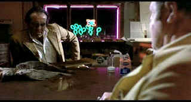

| Blood
Simple (SE)/ B+,A- |
| Universal/1983/96/ANA 1.85 |
Blood Simple, the dark, sharp film noir debut of the Coen Brothers, stands
test of time with its macabre humor in tact. The origins are pure noir with an extra twist of Coen Brothers
vision. Characters are viewed through a slightly skewed lens, emphasizing the warts and scars.
Despite the twists and turns, the Coens keep the wheels of this vehicle glued to the road assuring
a very smooth movie ride.
 |
| The dead fish offer up the cleanest
smell. ©Universal |
It's a classic noir situation. A bar owner in a nowhere town with a dissatisfied wife,
a bartender easy prey for the sexual appetites of the wife, and a private detective dragged onto
the scene to clean up the situation.
Every character is as shady as drink with a bitter aftertaste. Despite the fact that
you can't sympathize with anyone, the Coens maintain a light energy that prevents any bitterness
from spoiling the experience. There are films where dark and unsympathetic characters simply ruin
the proceedings, but happily, Blood Simple overpowers the shortcomings of its characters.
The wonderful camera work on Barry Sonnenfeld is on display in Blood Simple.
Quirky lighting and signature tracking shots and angles bend the camera style to the script
treatment. Carter Burwell's chords are on hand to complete the mood.
John Getz isn't much to speak of in the role of Ray, but his bland
demeanor emphasizes the garish aspects of Marty and he beds down well with the always solid Frances
McDormand. M. Emmett Walsh has a field day with the dirty detective.
A very dark film, Blood Simple on DVD looks better than I have ever seen
it. Even viewed on a new 16 x 9 DLP projector, the overall shadow balance is outstanding and the
blacks are dark enough to maintain the mood and look of the film. The image is consistently sharp.
The details of the fish laying across Marty's desk are clear enough to catch a hint of the smell.
Colors are very stable and consistent. Blood Simple delivers the DVD goods with a devious twist of
delight.
And now for something completely different. a special edition featuring a faux
audio commentary. Kenneth Loring of Forever Young Films makes a mockery of technical film
observations with an hilarious scene specific spoof.
|
|
|
|

Selections from the Feature Archive include articles on
Akira Kurosawa, Frank
Darabont, Blonde Bimbos, Hollywood Street Gangs, or Vietnam: The
Hollywood Pariah, and many more....
Sturges Emerges
Preston Sturges was Hollywood's resident comic genius for more than a decade. His movies are
timeless. Click on his image to read all about it.

A Star is Born/A,B

Judy Garland is brilliant in the great Hollywood tale of one star on the rise and another
sliding into the abyss. James Mason is wonderful alongside Judy.

The
Movie Poster Archive includes extensive poster images from the films of stars like Susan Hayward,
Kirk Douglas, Katharine Hepburn and many more. Our featured star is Frank Sinatra.

I just love to watch the FBI Warning and that isn't enough, I am
treated to a graphic designer's wet logo dream.
FBI Warning/
Logo Wars
|